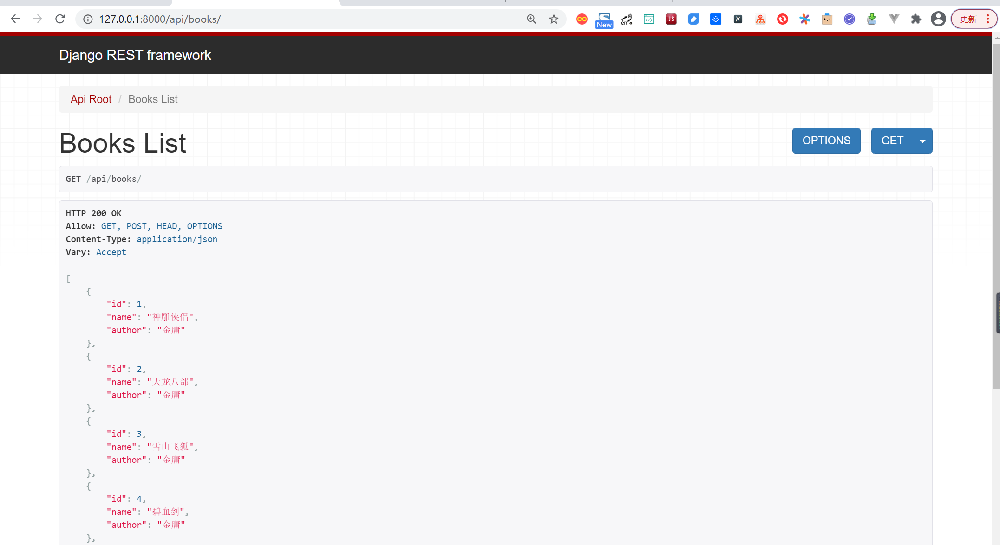
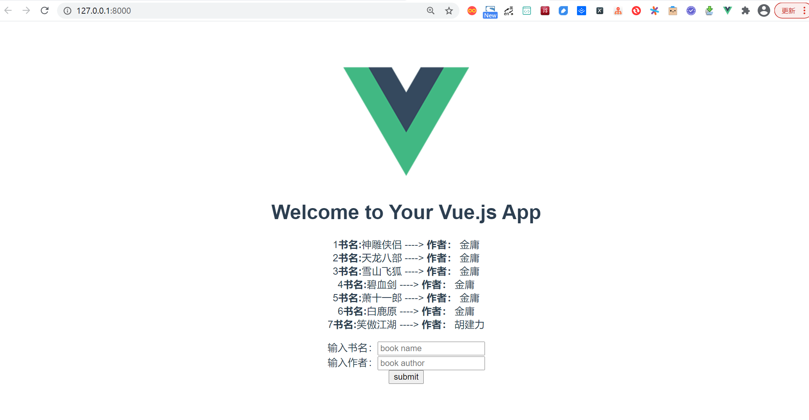

Contents
28.1. Django+Vue.js快速构建项目示例¶
28.1.1. 1.项目准备¶
$ python -V
Python 3.7.0
18793@DESKTOP-PMJTNGI MINGW64 /d/0项目/book_demo
$ python -m django --version
3.1.7
28.1.2. 2.Django部分¶
为了方便后端的实现，作为django做后端api服务的一种常用插件，django-rest-framework(DRF)提供了许多好用的特性，所以本文demo中也应用一下，命令行输入命令安装：
pip install Djangorestframework markdown Django-filter pillow Django-guardian coreapi -i "https://pypi.doubanio.com/simple/"
下面开始做一些简单的配置：
将DRF和books配置到django项目中，打开项目中的settings.py文件，添加：
INSTALLED_APPS = [
'django.contrib.admin',
'django.contrib.auth',
'django.contrib.contenttypes',
'django.contrib.sessions',
'django.contrib.messages',
'django.contrib.staticfiles',
'books.apps.BooksConfig',
'rest_framework',
'corsheaders'
]
对整个项目的路由进行配置，让访问api/路径时候转到books应用中的urls.py文件配置进行处理。
from django.contrib import admin
from django.urls import path, include
from django.views.generic.base import TemplateView
urlpatterns = [
path('admin/', admin.site.urls),
path('api/', include('books.urls')), # demo add
path('', TemplateView.as_view(template_name='index.html'))
]
在models.py文件中写简单数据类Books：
# books/models.py
from django.db import models
class Books(models.Model):
name = models.CharField(max_length=30)
author = models.CharField(max_length=30, blank=True, null=True)
在books文件夹中创建serializer.py文件，并写对应序列化器BooksSerializer：
#!/usr/bin/env python
# -*- coding: utf-8 -*-
from rest_framework import serializers
from books.models import Books
class BooksSerializer(serializers.ModelSerializer):
class Meta:
model = Books
fields = '__all__'
在views.py文件中写对应的视图集BooksViewSet来处理请求：
from rest_framework import viewsets
from books.models import Books
from books.serializer import BooksSerializer
class BooksViewSet(viewsets.ModelViewSet):
queryset = Books.objects.all()
serializer_class = BooksSerializer
在urls.py文件中写对应的路由映射：
from django.urls import path, include
from rest_framework.routers import DefaultRouter
from books import views
router = DefaultRouter()
router.register('books', views.BooksViewSet)
urlpatterns = [
path('', include(router.urls)),
]
到这里，可以运行一下后端项目看看效果，命令行运行：
python manage.py makemigrations
python manage.py migrate
python manage.py runserver
得益于DRF提供的api可视化界面，浏览器访问127.0.0.1:8000/api/books/，如果出现了以下界面并添加数据正常，则说明后端的基本逻辑已经ok了~

28.1.3. 3.前端部分¶
前端实现
这里直接用HelloWorld.vue进行修改，只求功能不追求页面了~
<template>
<div class="hello">
<h1>{{ msg }}</h1>
<!-- show books list -->
<ul>
<li v-for="(book, index) in books" :key="index" style="display:block">
{{index+1}}<b>书名:</b>{{book.name}} ----> <b>作者：</b> {{book.author}}
</li>
</ul>
<!-- form to add a book -->
<form action="">
输入书名：<input type="text" placeholder="book name" v-model="inputBook.name"><br>
输入作者：<input type="text" placeholder="book author" v-model="inputBook.author"><br>
</form>
<button type="submit" @click="bookSubmit()">submit</button>
</div>
</template>
<script>
import {getBooks, postBook} from '../api/api.js'
export default {
name: 'HelloWorld',
data () {
return {
msg: 'Welcome to Your Vue.js App',
// books list data
books: [
{name: 'test', author: 't'},
{name: 'test2', author: 't2'}
],
// book data in the form
inputBook: {
"name": "",
"author": "",
}
}
},
methods: {
loadBooks () {
getBooks().then(response => {
this.books = response.data
})},
bookSubmit () {
postBook(this.inputBook.name, this.inputBook.author).then(response => {
console.log(response)
this.loadBooks()})}
},
created: function () {
this.loadBooks()
}
}
</script>
<!-- Add "scoped" attribute to limit CSS to this component only -->
<style scoped>
h3 {
margin: 40px 0 0;
}
ul {
list-style-type: none;
padding: 0;
}
li {
display: inline-block;
margin: 0 10px;
}
a {
color: #42b983;
}
</style>
启动前端项目，浏览器访问127.0.0.1:8080
28.1.4. 4.前后端联调¶
后端部分，对于django的跨域问题，网上比较常用的做法就是利用django-cors-headers模块来解决，这里也不能免俗，操作如下。
先在命令行中进行对应模块的安装：
pip install Django-cors-headers -i "https://pypi.doubanio.com/simple/"
然后在项目中添加该模块：
INSTALLED_APPS = [
'django.contrib.admin',
'django.contrib.auth',
'django.contrib.contenttypes',
'django.contrib.sessions',
'django.contrib.messages',
'django.contrib.staticfiles',
'books.apps.BooksConfig',
'rest_framework',
'corsheaders'
]
MIDDLEWARE = [
'corsheaders.middleware.CorsMiddleware', # 需注意与其他中间件顺序，这里放在最前面即可
'django.middleware.security.SecurityMiddleware',
'django.contrib.sessions.middleware.SessionMiddleware',
'django.middleware.common.CommonMiddleware',
'django.middleware.csrf.CsrfViewMiddleware',
'django.contrib.auth.middleware.AuthenticationMiddleware',
'django.contrib.messages.middleware.MessageMiddleware',
'django.middleware.clickjacking.XFrameOptionsMiddleware',
]
# 支持跨域配置开始
CORS_ORIGIN_ALLOW_ALL = True
CORS_ALLOW_CREDENTIALS = True
前端的逻辑，Vue框架现在一般都用axios模块进行网络请求，这里沿用这种方式，下面是在前端项目中操作：
首先命令行安装axios模块，如果没有安装cnpm就还是用npm安装：
cnpm install axios
为了方便管理api请求的各种逻辑，在前端项目的src目录下创建api目录，然后创建api.js和index.js文件。index.js文件是对axios做配置：
import Vue from 'vue'
import Axios from 'axios'
const axiosInstance = Axios.create({
withCredentials: true
})
// 通过拦截器处理csrf问题，这里的正则和匹配下标可能需要根据实际情况小改动
axiosInstance.interceptors.request.use((config) => {
config.headers['X-Requested-With'] = 'XMLHttpRequest'
const regex = /.*csrftoken=([^;.]*).*$/
config.headers['X-CSRFToken'] = document.cookie.match(regex) === null ? null : document.cookie.match(regex)[1]
return config
})
axiosInstance.interceptors.response.use(
response => {
return response
},
error => {
return Promise.reject(error)
}
)
Vue.prototype.axios = axiosInstance
export default axiosInstance
api.js文件是对后端进行请求，可以看到，获取books列表和添加一本book各对应于一个请求：
import axiosInstance from './index'
const axios = axiosInstance
export const getBooks = () => {
return axios.get(`http://localhost:8000/api/books/`)
}
export const postBook = (bookName, bookAuthor) => {
return axios.post(`http://localhost:8000/api/books/`, {'name': bookName, 'author': bookAuthor})
}
然后更新HelloWorld.vue中的处理逻辑：
<script>
import {getBooks, postBook} from '../api/api.js'
export default {
name: 'HelloWorld',
data () {
return {
msg: 'Welcome to Your Vue.js App',
// books list data
books: [
{name: 'test', author: 't'},
{name: 'test2', author: 't2'}
],
// book data in the form
inputBook: {
"name": "",
"author": "",
}
}
},
methods: {
loadBooks () {
getBooks().then(response => {
this.books = response.data
})},
bookSubmit () {
postBook(this.inputBook.name, this.inputBook.author).then(response => {
console.log(response)
this.loadBooks()})}
},
created: function () {
this.loadBooks()
}
}
</script>
至此，一个极其简陋的查询和添加书籍的功能算是完成了~如下图：

可以看到，列表里面的数据是从后端读取到的，同时前端的提交数据库也能有对应的操作，所以前后端至此是打通了。
28.1.5. 5.打包¶
vue.config.js
module.exports = {
publicPath: "./",
assetsDir: "static",
outputDir: "dist",
}
现阶段是前后端分开开发，但是当最后要用的时候，还需要把代码合在一起。
首先对前端项目进行打包，这里用Vue的自动打包：
npm run build
可以看到前端项目中多出了一个dist文件夹，这个就是前端文件的打包结果。需要把dist文件夹复制到books_demo项目文件夹中。
然后对settings.py文件进行相应的修改，其实就是帮django指定模版文件和静态文件的搜索地址：
TEMPLATES = [
{
'BACKEND': 'django.template.backends.django.DjangoTemplates',
# 'DIRS': [BASE_DIR / 'templates'],
'DIRS': [os.path.join(BASE_DIR, 'dist')],
'APP_DIRS': True,
'OPTIONS': {
'context_processors': [
'django.template.context_processors.debug',
'django.template.context_processors.request',
'django.contrib.auth.context_processors.auth',
'django.contrib.messages.context_processors.messages',
],
},
},
]
STATICFILES_DIRS = [
os.path.join(BASE_DIR, 'dist/static'),
]
最后在根urls.py文件中配置一下入口html文件的对应路由：
from django.contrib import admin
from django.urls import path, include
from django.views.generic.base import TemplateView
urlpatterns = [
path('admin/', admin.site.urls),
path('api/', include('books.urls')), # demo add
path('', TemplateView.as_view(template_name='index.html'))
]
重新启动项目，这次用浏览器访问127.0.0.1:8000，即django服务的对应端口即可。
可以看到，项目的交互是正常的，符合我们的预期。